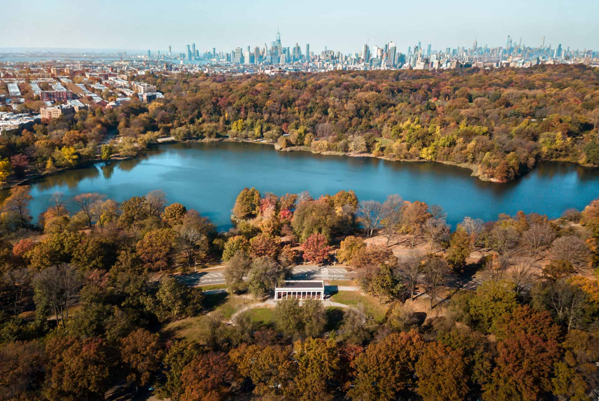

Kings Theatre is one of the most famous landmarks in Flatbush. It originally opened in 1929 and has been restored into a beautiful venue for concerts, comedy shows, and live performances. It is a great place to experience entertainment in Brooklyn.
Flatbush Avenue is one of the main streets in Brooklyn. It has many different restaurants, stores, and local businesses. You can find different types of food and experience the diversity of the Flatbush community.
Prospect Park is a popular outdoor destination near Flatbush. It is a great place to walk, relax, have picnics, and enjoy nature. The park also has sports fields, trails, and beautiful scenery.
